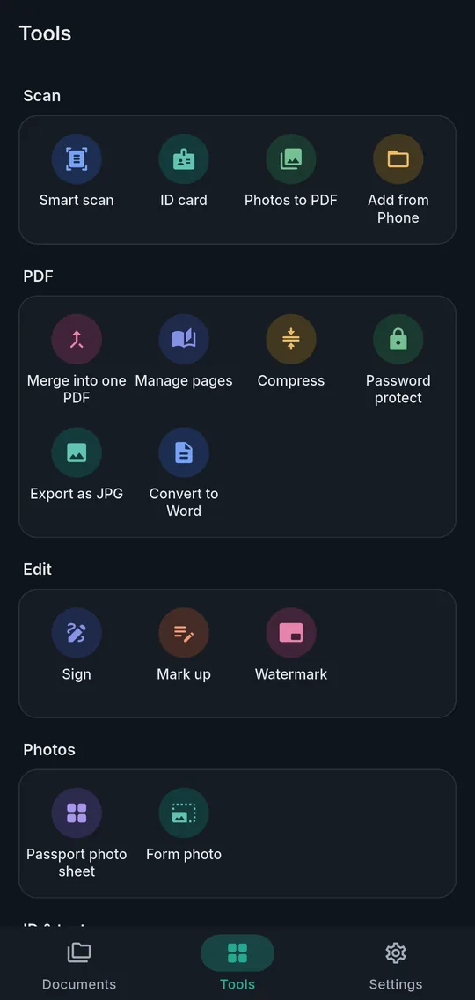
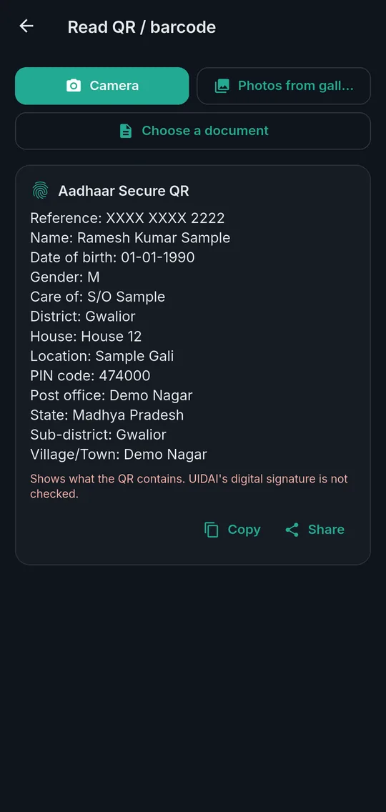
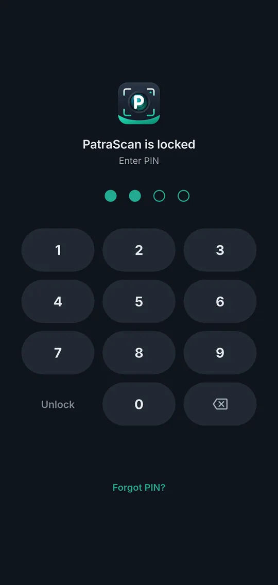
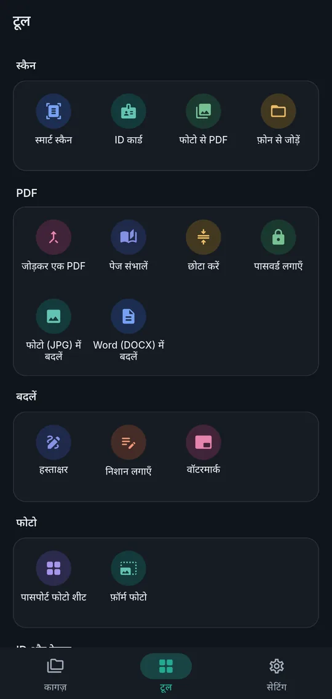

Smart scan with automatic edge detection
Hold your phone over a document and PatraScan finds the page, captures it and fixes the perspective — even when the photo is tilted. Multi-page scans become one tidy PDF in A4, Letter or fit-to-photo size.

PatraScan keeps Aadhaar, PAN, passport, marksheets and every PDF safe on your phone — and turns them into exactly what forms, banks and offices ask for. Offline, in Hindi and English, with no ads and no account.
Free · Android 7.0 and newer · About 34 MB. Join as a tester first, then tap Install on Google Play.

Point, check, protect, share. Every step happens on your phone.
Smart scan finds the edges and captures on its own. Or pick photos and PDFs already on your phone.
Straighten, crop, reorder pages and apply Magic colour, B&W or shadow removal — per page or all at once.
Saved into an encrypted vault, named and sorted by type and family member. Add a PIN or fingerprint if you like.
Mask Aadhaar, add a "Only for bank KYC" watermark, sign or compress — preview it — then send.
A scanner, a vault and 20+ PDF tools — designed around the documents you actually carry.
Hold your phone over a document and PatraScan finds the page, captures it and fixes the perspective — even when the photo is tilted. Multi-page scans become one tidy PDF in A4, Letter or fit-to-photo size.
Front and back of a card on one page — exactly like a photocopy, ready to print or upload.
Hide the first 8 digits of your Aadhaar number in one tap, as UIDAI recommends — and see the result before you share.
Read the Aadhaar Secure QR and any QR or barcode offline — from the camera, a photo or a saved document.
Stamp who a copy is for and the date across every page, so a photocopy can’t be reused somewhere else.
Government and bank portals reject big files. Pick Light, Medium or Strong — or a target like under 500, 200, 100 or 50 KB — and PatraScan gets it there.
Make a sheet of 35×45 mm passport photos for 4×6 or A4 printing, or resize a photo (200×230, 20–50 KB) and signature (140×60, 10–20 KB) for exam and government forms.
Copy the text from any page — Hindi and English — read entirely on your phone.
Search by name, type or the words inside a document — आधार, Aadhaar or even “Aadhar”.
Keep Papa’s, Maa’s and Riya’s documents apart, and get a reminder before a passport or licence expires.
Signed, watermarked, marked-up or masked? A full-screen preview shows every page first. Nothing is shared or saved until you tap Share or Save.
Optional. Files are encrypted before upload into a hidden folder only PatraScan can see; a recovery key you keep restores them on a new phone. Or save a password-protected backup file.
Sorted by type and family member

Scan, PDF, edit, photos, ID & text
Crop, filter, rotate, retake

Magic colour, B&W, grey

First 8 digits hidden

Offline, on your phone

PIN or fingerprint

Every screen, both languages
Real moments where PatraScan saves a trip to the photocopy shop.
Outcome: files that meet the portal’s size rules first time.
Outcome: a copy that only works for the purpose you wrote on it.
Outcome: one signed, ordered PDF instead of ten attachments.
Outcome: no more searching WhatsApp for an old photo of a card.
Outcome: share what’s needed, keep the rest private.
Outcome: a print-ready photo sheet for any photo shop.
No server, no account, no analytics. Your files are encrypted on your phone with a key only you control — Drive sync only ever stores it locked with your own recovery key.
Every file, preview and name is encrypted with AES-256-GCM. The key lives in Android’s secure storage. OCR, QR, filters and PDF tools all run on-device.
Turn it on and files go to a hidden appdata folder in your Google Drive — already encrypted. Google sees sizes and times, never names or contents.
A 32-character recovery key — shown once, kept by you — unlocks your documents on a new phone. Without it, nobody can read them. Not even us.
| What matters | PatraScan | Typical free scanner apps |
|---|---|---|
| Ads | None | Often full-screen ads |
| Account or sign-up | Not needed | Often required for cloud features |
| Watermark on exported PDFs | Never — only the one you add | Common on the free tier |
| Text recognition | On your phone | Often sent to a server |
| Files at rest | AES-256 encrypted vault | Usually plain files in storage |
| Aadhaar masking, KYC watermark, form photo sizes | Built in | Rare |
| Hindi interface and search | Complete | Partial or none |
PatraScan is in early access. Open the early-access page signed in with your Google account, tap Become a tester, then install it from Google Play. It can take a few minutes after joining for the Install button to appear. Early access is limited to invited testers for now; public release follows.
Yes. Every feature is free, with no ads, no in-app purchases and no watermark on your files.
Yes. Scanning, filters, text recognition, QR reading, masking and all PDF tools work offline. Internet is only used if you turn on Google Drive sync.
No. We don’t run a server and don’t collect any data. Documents are encrypted on your phone; Drive sync uploads them already encrypted to your own Drive. Read the privacy policy.
If Drive sync is on, install PatraScan on the new phone, turn on sync with the same Google account and enter your recovery key — your documents come back. You can also restore from a password-protected backup file.
UIDAI recommends sharing masked Aadhaar where the full number isn’t needed. PatraScan hides the first 8 digits and shows you a preview before you share. Some services still ask for the full number — share the original only when you must.
Android 7.0 and newer, including tablets and Chromebooks. The app downloads at about 34 MB.
Scan, protect and share them the right way — free, private and in your language.